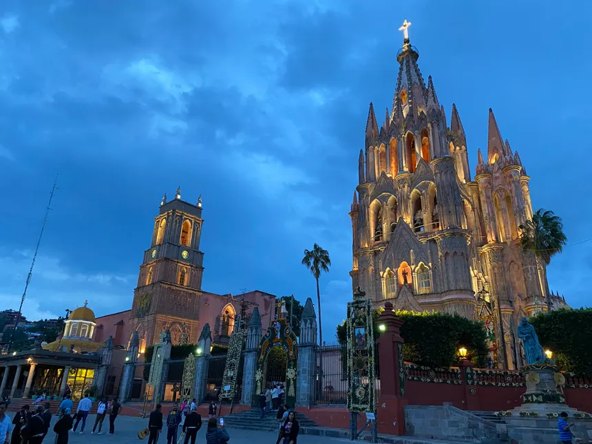
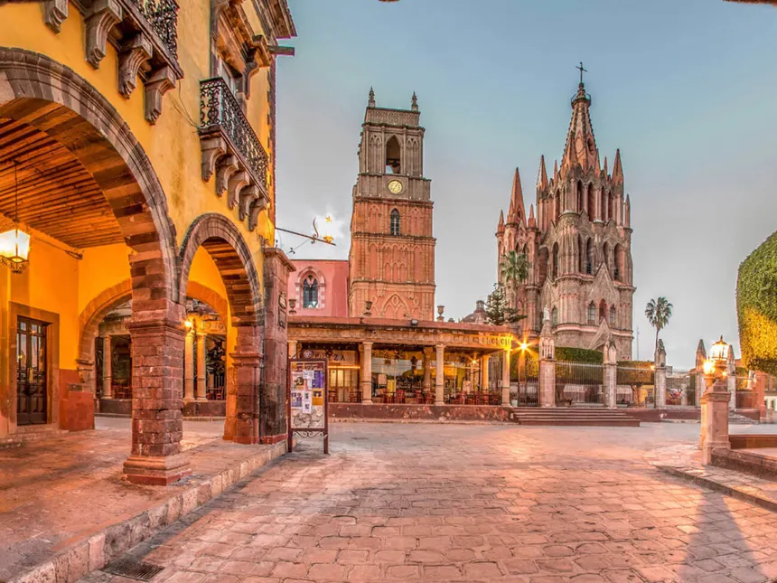
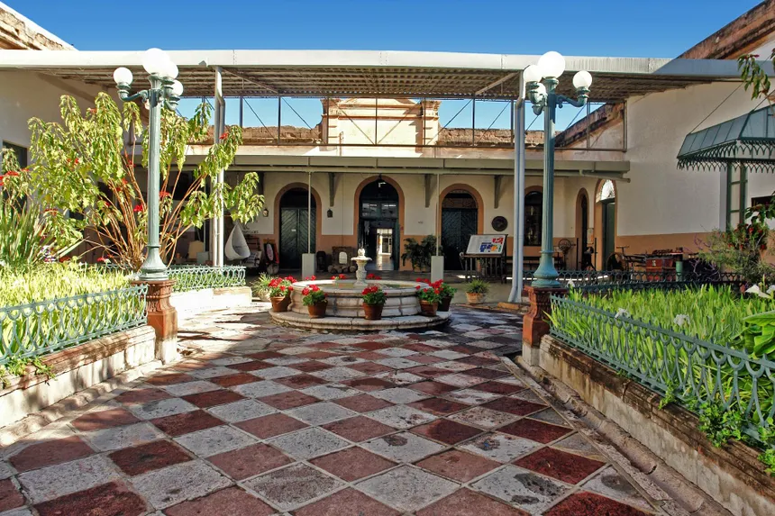

San Miguel de Allende
Información general
San Miguel de Allende es una ciudad conocida por su arquitectura colonial, sus calles empedradas y sus fachadas coloridas. Su centro histórico conserva edificios de gran valor cultural y fue reconocido como Patrimonio Mundial por la UNESCO junto con el Santuario de Jesús Nazareno de Atotonilco.
Atractivos turisticos
Parroquia de San Miguel Arcangel
Es el edificio s representativo de la ciudad. Su fachada neogotica se destaca en el centro historico.

Fabrica La Aurora
Antigua fabrica textil convertida en un espacio con galerias de arte, tiendas y estudios de artistas.

Santuario de Jesus Nazareno de Atotonilco
Complejo religioso famoso por sus pinturas murales y su importancia historica y artistica.

Gastronomia
Algunas comidas y preparaciones que se pueden probar:
Enchiladas mineras
Preparacion regional de Guanajuato que se puede encontrar en restaurantes tradicionales.
Guacamayas
Tortas tipicas de Guanajuato, conocidas por su relleno sabroso y picante.
Antojitos mexicanos
En el centro y los mercados hay puestos y restaurantes donde probar distintas preparaciones.
Sitios famosos
Jardin Allende
Plaza principal rodeada de edificios historicos, restaurantes y cafes.
Centro historico
Sus calles, plazas y construcciones coloniales forman parte de la identidad de la ciudad.
Actividades para turistas
- Recorrer a pie el centro historico y sus plazas.
- Visitar galerias de arte y museos.
- Conocer el Santuario de Atotonilco.
- Disfrutar de mercados y experiencias gastronomicas.